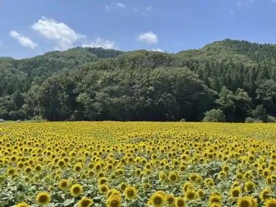
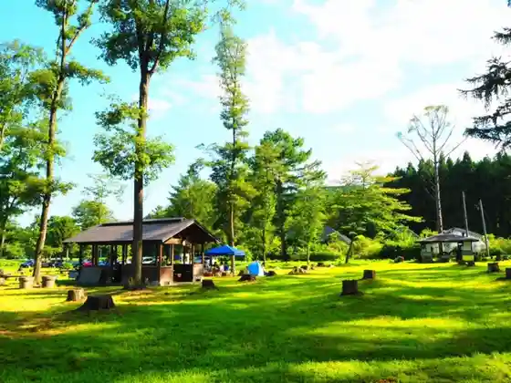

Ore no Jaja
Yahaba, Iwate · 019-656-9028 · Official / source link
Hyakumangoku (Higaeri Nyuyoku Shisetsu)
Yahaba, Iwate · 019-697-1888 · Official / source link
Wa Aji Furawa Park
Yahaba, Iwate · 019-611-2605 · Official / source link

Jizake Tokutan Shiro (Betsu Sho) Shochu
Yahaba, Iwate · 019-697-2310 · Official / source link
Yahaba Ei Campground
Yahaba, Iwate · 019-697-2310 · Official / source link

Yama Budo
Yahaba, Iwate · 019-697-2310 · Official / source link
Kemuriyama Himawari Park (Kemuriyama Koen Tonari)
Yahaba, Iwate · 019-611-2605 · Official / source link
Kyu Kemuriyama Naehata no Sakura Namiki
Yahaba, Iwate · 019-611-2603 · Official / source link
Shimizu no no Sakura Namiki
Yahaba, Iwate · 019-611-2616 · Official / source link
Suihen Village
Yahaba, Iwate · 019-611-2603 · Official / source link
Tokutan Castle Ruins
Yahaba, Iwate · 019-611-2649 · Official / source link
Nansho Yama
Yahaba, Iwate · 019-697-2111 · Official / source link
Jonai Yama Lookout
Yahaba, Iwate · 019-611-2603 · Official / source link
Den'en Horu (Yahaba Culture Hall)
Yahaba, Iwate · 019-697-5585 · Official / source link
Zasu Kan Denpo Tera Ato
Yahaba, Iwate · 019-611-2649 · Official / source link
Kemuriyama Dam
Yahaba, Iwate · 019-611-2605 · Official / source link
Nusakake no Taki to Kita no Sawa Otaki
Yahaba, Iwate · 019-611-2605 · Official / source link